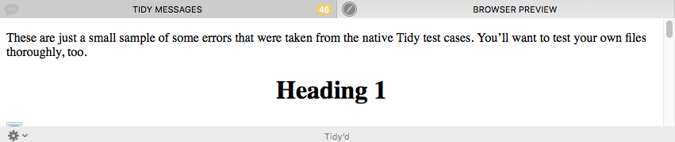
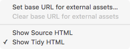

The Browser Preview Panel
The Browser Preview panel is where you can review how Balthisar Tidy’s changes affect how your source code is rendered. You can see how the browser renders your Source HTML or the Tidy HTML, giving you a good opportunity to compare them.

Present on the bottom of the Browser Preview panel are an action menu as well as a label indicating which HTML source code is currently displayed. Use the Action menu to do any of the following:

- Set base URL for external assets…
-
Most web pages load external assets such as cascading style sheets or images, and these are often loaded with a relative URL path. If your document counts on relative paths to external assets, you can use this menu command to choose the base URL for such assets.
- Clear base URL for external assets
-
Use this menu command if you no longer wish to load external assets from the directory you’ve chosen.
- Show Source HTML
-
This menu command will show the text in the Source HTML panel in the Browser Preview. This can be useful if you suspect that Tidy is changing how your page is rendering.
- Show Tidy HTML
-
By default Balthisar Tidy displays the result of the Tidy HTML panel in the Browser Preview. If you have changed to another view, then this menu command will return to the default.
Browser Preview Throttle
The Browser Preview is very, very fast, and it will keep up with your typing in the Source HTML panel even for very large documents. This makes Balthisar Tidy a very good standalone HTML editor in its own right. However some complex documents, especially those that load a lot of external resources, can cause the Browser Preview to behave sluggishly (after all, it tries to update after every keystroke).
If you experience such issues, consider adjusting the Browser Preview Throttle setting on the Advanced page of Preferences. This setting can ensure that the Browser Preview won’t update instantly with every keystroke, but at a more moderate frequency.